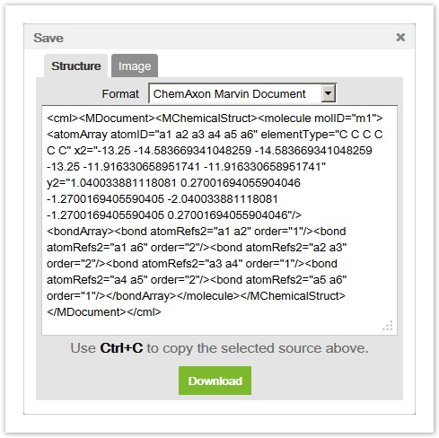

Marvin JS User's Guide
Table of Contents (Start)
Import and Export
Importing a Structure
Marvin JS handles MDL Molfiles V2000 (.mol extension) and ChemAxon Marvin Documents (.mrv extension) as input files. However, other file types (SMILES, ChemAxon Extended SMILES, SMARTS, ChemAxon Extended SMARTS, InChi, Name, CML, MDL Molfile V3000, MDL SDfile, ChemAxon Compressed Molfile, ChemAxon Compressed SDfile, and XYZ) can also be imported if the appropriate webservice is available.
In Marvin JS you can Import your file in several ways.
Drag &Drop
You can open your file by choosing a molecule file in your file system, and dragging it over and drop it onto the Marvin JS canvas.
Import Menu
When you press the Import
button on the General toolbar to open the Import pop-up window. (The dialog can be opened by pressing the "Ctrl+O" keyboard shortcut, too.)
You can import your file from your file system by pushing the Choose File button or by pasting its source into the Paste source text field.
Import by Paste source function:
Open the structure file with a text editor (e.g., Notepad), select all, and copy the file contents to the clipboard then paste it into the input area. Above the text field you can select the appropriate file format from a drop-down list, or you can choose the auto recognize option. Finally, pressing the "Import" button loads the structure on the canvas.

Export
Export a Structure
A structure can be saved either in ChemAxon Marvin Document format or in MDL Molfile V2000 format. In order to export in other file formats (SMILES, ChemAxon Extended SMILES, SMARTS, ChemAxon Extended SMARTS, InChi, InChiKey, Name, CML, MDL Molfile V3000, MDL SDfile, ChemAxon Compressed Molfile, ChemAxon Compressed SDfile, XYZ, CDX, and SKC) the appropriate webservice has to be available.
To save the structures on the canvas, click on the Export button on the General toolbar which opens the Save dialog window. Alternatively, you can use the "Ctrl+S" keyboard shortcut as well. In this window you can see the canvas contents in the default ChemAxon Marvin Document format. The structure file format can be changed by selecting an option from the drop-down list of supported file formats. To save that to a file, push the Download button at the bottom of the dialog window, click on the created link, and save the file with the preferred name and route. Alternatively, you can paste the structure source into a text editor and save it from there. In case of CDX and SKC file formats, only the first option can be carried out.

Saving as Image
In order to save an image of the structure in Marvin JS, select Image Tab in the Export dialog. The supported image formats are PNG and JPEG. You can also set display options, detailed here , determine the color of the image background (transparent or white), and set the width and height of the image.